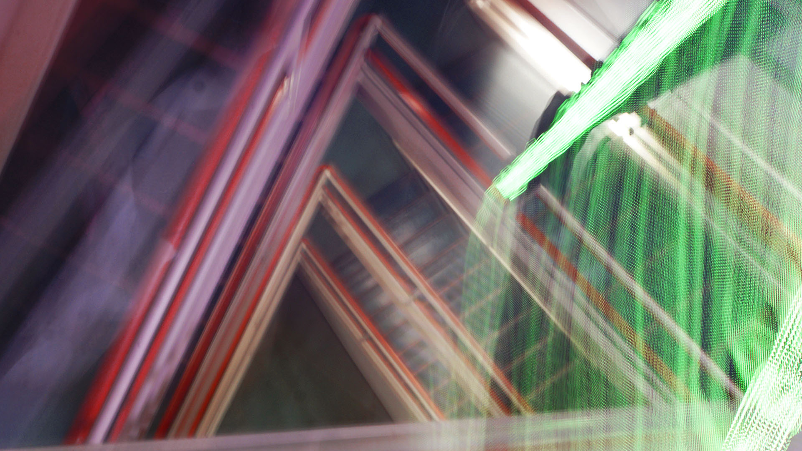

Here is the second image for Homework 2: I took this picture because the staircase reveals a change of mindset towards exercise and my body through my years at Hunter. I would always avoid the staircase since there is a faster and easier way, which is the elevator; however, now I always enjoy and choose to take the stairs for my body. I add the picture and crop it to the requested size. I chose brightness to lower the light in the background and increase contrast to make the picture clearer. I add saturation to define the color better.
